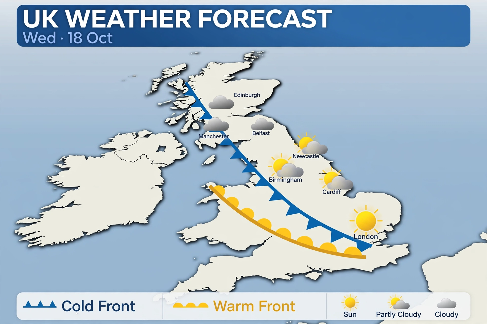

Weather

BBC Weather provides UK and world forecasts — by hour and by day — with maps, severe weather warnings and presenter-led video forecasts, using data remembered as supplied by MeteoGroup after the Met Office era.
News
Return to BBC News.
BBC Home
BBC homepage.